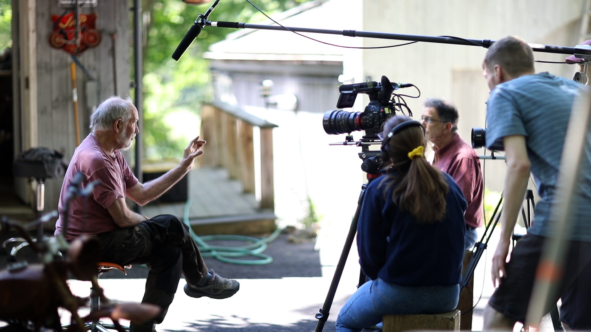
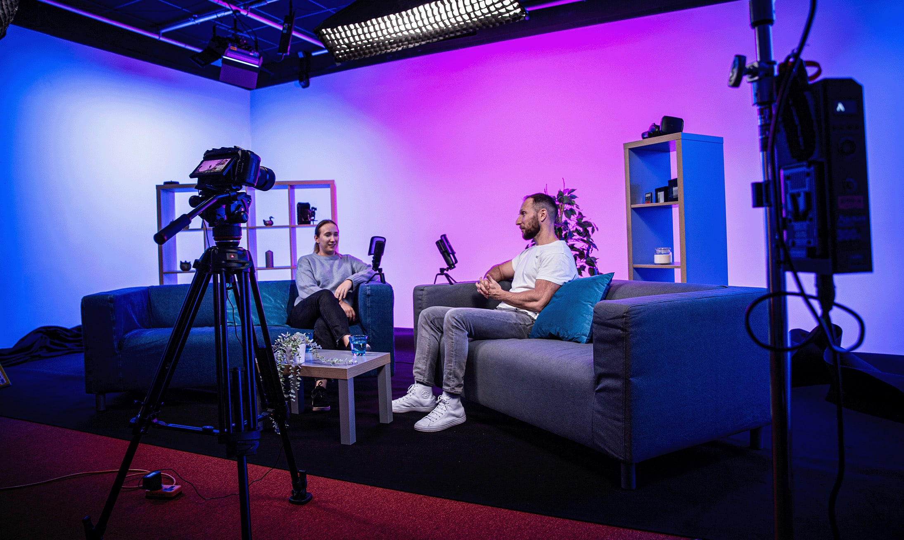
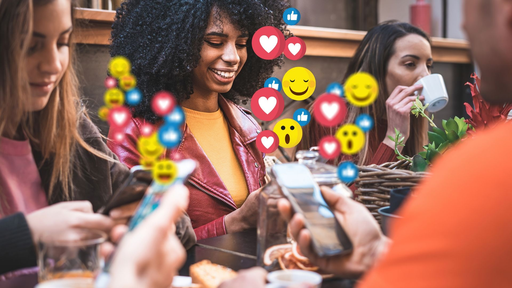

Promotional Video Production
Elevate your brand with expertly crafted promotional videos. I blend creativity and strategy to deliver compelling visual stories that engage and convert. Perfect for businesses looking to make a lasting impression.

Documentary Production
Capture real-life events and perspectives with authenticity and depth in documentary filmmaking. I bring stories to life through immersive visuals, creating powerful narratives that inform and inspire viewers.

Podcast Production
Elevate your audio content with professional podcast video production. I create engaging visual elements to complement discussions, making your podcasts more immersive and shareable across platforms.

Photography Services
Professional photography for portraits, events, and promotional content. I specialize in capturing authentic moments that tell your story visually, from studio shoots to on-location sessions.
Social Media Content Creation
Boost your online presence with creative social media videos and photos. I design eye-catching content tailored for platforms like Instagram, YouTube, and TikTok to grow your audience and enhance engagement.
Video Editing & Post-Production
Transform raw footage into polished masterpieces with professional editing services. Including color grading, sound design, and special effects to bring your vision to life with technical precision.